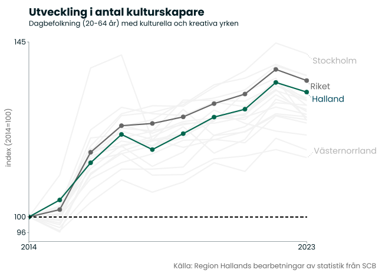
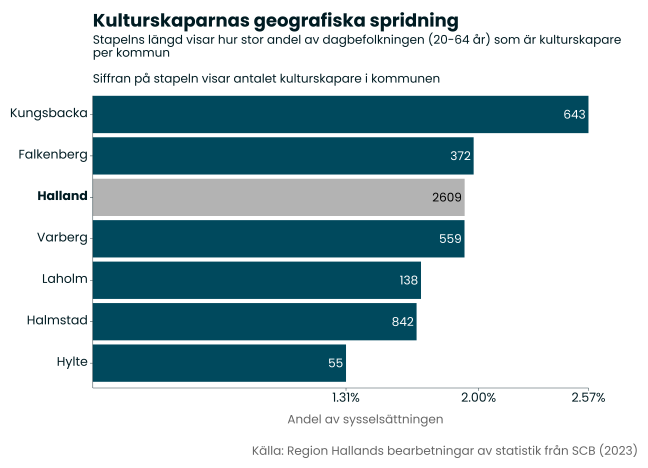
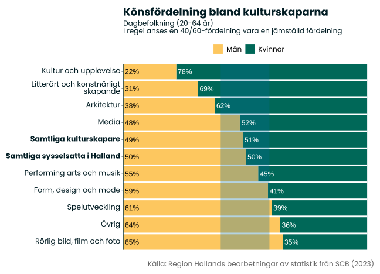
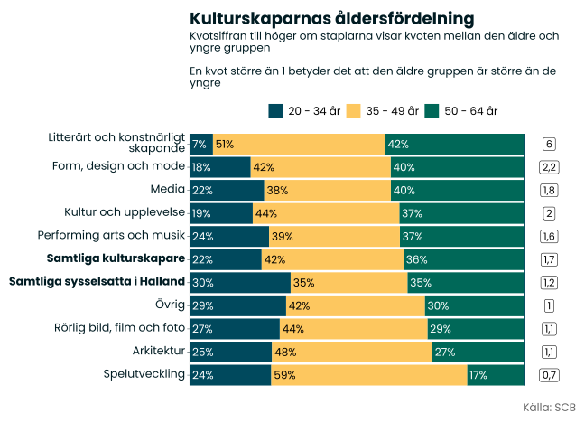
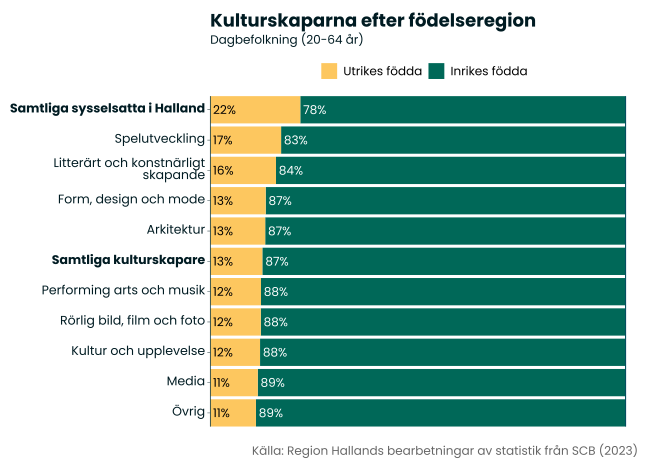
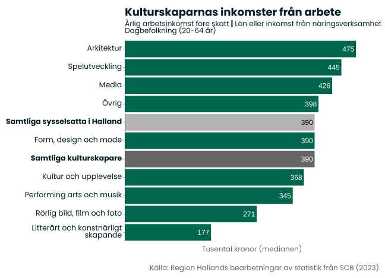

Kulturskapare
Om indikatorn
Kulturskapare är personer som i en eller annan bemärkelse skapar kultur, exempelvis författare, konstnärer eller musiker. Kulturskapare kan vara knutna till en institution, men många ingår också i den fria delen av kulturlivet. I det här kapitlet studerar vi Hallands yrkesverksamma kulturskapare. Det vill säga de individer som har kulturskapandet som sin huvudsakliga inkomstkälla och sysselsättning.
I analysen är vi intresserade av de kulturskapare som är verksamma i Halland. Därför studerar vi Hallands sysselsatta dagbefolkning, det vill säga de individer som bor och arbetar i Halland eller pendlar in till Halland. Personer som bor i Halland men som pendlar ut från regionen ingår alltså inte i beräkningarna.
För att sortera ut kulturskaparna i statistiken har vi utgått från SCB:s yrkesregister och studerat de som, enligt en definition från myndighetssamarbetet Kreametern, har ett kulturellt eller kreativt yrke (Kreametern, 2018). En utmaning med statistiken är att många kulturskapare är egenföretagare, vilka inte alltid har en yrkesklassificering enligt standard för svensk yrkesklassificering (SSYK). För att hantera detta bortfall har vi även inkluderat personer som är egenföretagare inom en kulturell eller kreativ bransch, enligt en definition framtagen inom RSS-samarbetet och som utgår från svensk näringsgrensindelning (SNI). Vi vill dock betona att det fortfarande kan förekomma ett visst bortfall i statistiken, exempelvis vissa deltidsarbetare eller kombinatörer som inte är registrerade med ett kulturellt eller kreativt yrke i yrkesregistret. Se bilaga 1 för en lista med vilka yrken och branscher som inkluderas i beräkningarna.
En central utgångspunkt i Hallands kulturstrategi är att alla invånare och besökare ska kunna skapa kultur, oavsett kön, könsöverskridande identitet eller uttryck, etnisk tillhörighet, religion eller annan trosuppfattning, funktionsnedsättning, sexuell läggning eller ålder. I kapitlet studerar vi ett urval av dessa faktorer, i den mån det finns tillgänglig statistik.
Historisk utveckling
År 2023 fanns det 2609 kulturskapare i Halland. Kulturskaparjobben står för knappt 2 % av sysselsättningarna i regionen vilket är den nionde högsta nivån bland regionerna och under riksgenomsnittet (2,8 %). Storstadsregionerna drar upp riksgenomsnittet ordentligt. I Stockholm är 4,8 % de sysselsatta kulturskapare och hela 44 % av landets kulturskapare är verksamma i Stockholm.
Sedan 2014 har antalet kulturskapare ökat med 32 %. Det är den fjärde starkaste utvecklingen i landet, men under riksgenomsnittet som ligger på 35 %. I absoluta tal har antalet kulturskapare ökat med 634 individer under perioden. Tillväxten i kulturskapare har varit starkare än den totala jobbtillväxten i Halland under samma period (10 %).
Det senaste året har antalet kulturskapare minskat med 49 personer, vilket motsvarar en negativ tillväxt på 1,8 %. Utvecklingen är alltjämt något starkare än riksgenomsnittet, där minskningen låg på 2,1 %. Antalet kulturskapare har minskat i samtliga regioner under perioden 2022 till 2023.
Geografisk spridning
De flesta av kulturskaparna i Halland är verksamma i någon av regionens tre största kommuner Halmstad (842), Kungsbacka (643) och Varberg (559). Ställer vi antalet kulturskapare i relation till det totala antalet sysselsättningar i kommunen ser vi att kulturskapandet har störst prägel på arbetsmarknaden i Kungsbacka (2,6 % av jobben). I fallande ordning kommer sedan Falkenberg (2 %), Varberg (1,9 %), Laholm (1,7 %) , Halmstad (1,7 %), och Hylte (1,3 %).

Kategorier
Den vanligaste yrkeskategorin bland kulturskaparna är form, design och mode. 621 av kulturskaparna (24 %) tillhör denna kategori, som inrymmer yrken såsom industridesigners, möbelsnickare, grafiska formgivare och inredare. Den näst vanligaste kategorin är media. 489 kulturskapare (19 %) tillhör denna kategori, som inkluderar yrken såsom journalister och översättare. Den tredje vanligaste kategorin är performing arts och musik. 417 kulturskapare (16 %) tillhör denna kategori. Här ingår yrken såsom musiker, koreografer, skådespelare och olika typer av ljud- och ljustekniker.
I fallande ordning kommer sedan kategorierna arkitektur (317 sysselsatta), kultur och upplevelse (308 sysselsatta), rörlig bild, film och foto (197 sysselsatta), gruppen övrigt (118 sysselsatta), litterärt och konstnärligt skapande (101 sysselsatta) och spelutveckling (41 sysselsatta).
Källa: Region Hallands bearbetningar av statistik från SCB (2023). Data på kommunnivå har röjandekontrollerats genom att ett slumpmässigt brus tillförts. Totalen för Halland avser faktiskt värde.
Könsfördelning
Det är en jämn könsfördelning bland gruppen kulturskapare (51 % män och 49 % kvinnor). Men det skiljer sig mycket mellan de olika kategorierna. I många fall används 60/40-principen för att urskilja om det råder en jämn könsfördelning inom exempelvis en bransch eller yrkesgrupp. Om fördelningen ligger utanför detta spann är antagandet att det är faktorer som kopplar till könstillhörighet som förklarar det oförväntade utfallet.
Utgår vi från 60/40-principen kan vi konstatera att kategorierna media, performing arts och musik, samt form, design och mode, har en jämställd fördelning. Inom kategorierna kultur och upplevelse, litterärt och konstnärligt skapande, samt arkitektur, är kvinnor överrepresenterade. Kategorierna spelutveckling, övrigt samt rörlig bild, film och foto har en överrepresentation av män.

Åldersfördelning
Även åldersfördelningen varierar mycket mellan olika kategorier av kulturskapare. Särskilt intressant är det att jämföra andelen som är äldre (här definierat som gruppen 50 – 64 år) med andelen yngre (som vi avgränsar till 20 – 34 år). Om andelen äldre är högre än andelen yngre kan det tolkas som att återväxten inom kategorin är lägre än de förväntade åldersavgångarna.
Medelåldern bland kulturskaparna är relativt hög jämfört med genomsnittet för samtliga sysselsatta i Halland. 36 % av kulturskaparna är mellan 50 och 64 år och bara 22 % tillhör gruppen 20 – 34 år. Det kan finnas olika förklaringar till detta. Arbetslivsinträdet tar generellt längre tid för de som studerar en längre utbildning och många av kulturskaparjobben kräver eftergymnasial utbildning. Vi ska även komma ihåg att vi i statistiken studerar de som har kulturskapandet som sin huvudsakliga sysselsättning. En möjlig förklaring till den höga medelåldern inom gruppen kan vara att det tar tid innan en individ har möjlighet att ha kulturskapandet som sin huvudsakliga sysselsättning och inkomstkälla. Vikande intresse hos yngre generationer eller en negativ syn på arbetsmarknadsförutsättningarna inom ett fält är också potentiella förklaringsfaktorer till varför återväxten är svag inom en bransch. Sannolikt varierar förutsättningarna och förklaringsfaktorerna väsentligt mellan de olika kategorierna av kulturskapare.
Inom kategorin litterärt och konstnärligt skapande är enbart 7 % av de sysselsatta 20 - 34 år och 42 % tillhör gruppen 50 - 64 år. Kultur och upplevelse, samt form, design och mode, är också exempel på kategorier där den äldre åldersgruppen är betydligt större än inflödet av yngre sysselsatta.
Den kategori som sticker ut med en betydligt yngre sammansättning kulturskapare är spelutveckling. Här är 24 % av de sysselsatta 20 – 34 år och bara 17 % är 50 – 64 år. Det förklaras sannolikt av att spelutveckling, jämfört med övriga kategorier, är en nyare form av kulturskapande. I kategorierna övrigt, arkitektur, samt rörlig, bild film och foto, är den yngre och äldre gruppen ungefär lika stora.

Utrikes bakgrund
Bland kulturskaparna är det en lägre andel som är födda utanför Sverige jämfört med genomsnittet för Halland. 13 % av kulturskaparna är utrikes födda, att jämföra med 22 % av samtliga personer som är sysselsatta i Halland. Ingen av delkategorierna ligger över hallandsnittet. Högst är andelen inom spelutveckling (17 %) och lägst är andelen inom media (11 %).

Inkomster
Studier har visat att individer med kulturella och kreativa yrken generellt sett har lägre inkomster än övriga arbetsmarknaden (Kulturanalys, 2019). Liknande mönster ser vi i Halland, men det varierar kraftigt mellan olika kategorier. Ser vi till den årliga arbetsinkomsten (före skatt) för samtliga kulturskapare så ligger medianen på 390 tusen kronor, samma nivå som Halland som helhet. Fem av kategorierna har emellertid en lägre medianinkomst än genomsnittet, där individer som arbetar med litterärt och konstnärligt skapande sticker ut med särskilt låga inkomster (177 tusen kronor). Fyra kategorier har högre inkomster än hallandsgenomsnittet: arkitektur (475 tusen kronor), spelutveckling (445 tusen kronor), media (426 tusen kronor) och övrigt (398 tusen kronor).
